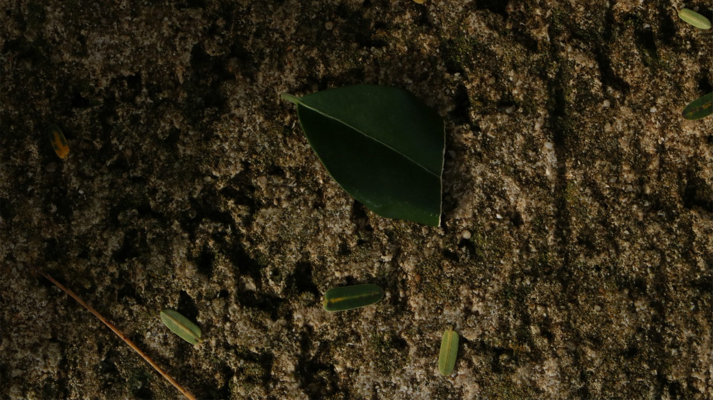
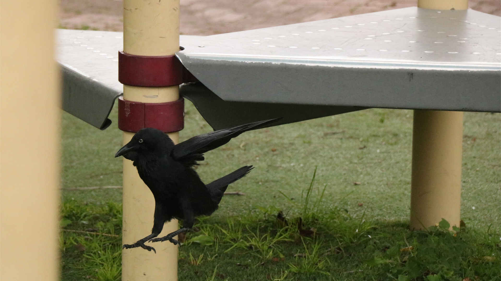

Welcome to Photo Gallery
Discover a world of stunning photos, from breathtaking landscapes to intimate moments captured through the lens. Our curated gallery showcases the beauty of photography, providing a space for both photographers and admirers to explore and enjoy.
About Our Website
Our photo gallery website is a hub for high-quality images and visual storytelling. Whether you're a professional photographer looking to share your work or a visitor seeking inspiration, we aim to offer an immersive and visually engaging experience. Each photograph tells a story, and we invite you to explore the creativity and passion behind every image.





×